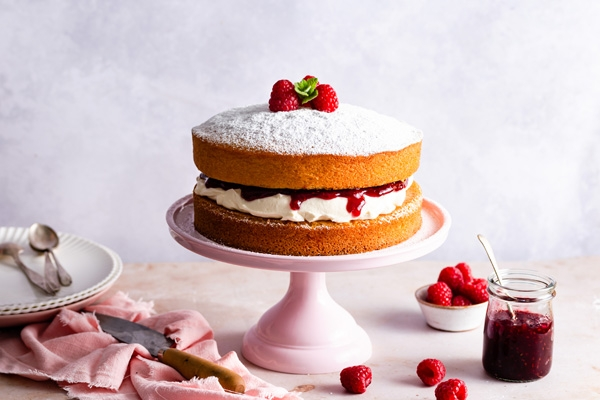

Victoria Sponge

The perfect party cake...
a Victoria sponge is a traditional bake everyone will love. Makes an easy wedding cake, too
Ingredients
- 200g caster sugar
- 200g softened butter
- 4 eggs, beaten
- 1 tsp baking powder
- 2 tbsp milk
- 200g self-raising flour
For the filling
- 100g butter, softened
- 140g icing sugar, sifted
- drop vanilla extract (optional)
- half a 340g jar good-quality strawberry jam
- icing sugar, to decorate
Step By Step
- Heat oven to 190C/fan 170C/gas 5. Butter two 20cm sandwich tins and line with non-stick baking paper.
- In a large bowl, beat 200g caster sugar, 200g softened butter, 4 beaten eggs, 200g self-raising flour, 1 tsp baking powder and 2 tbsp milk together until you have a smooth, soft batter.
- Divide the mixture between the tins, smooth the surface with a spatula or the back of a spoon.
- Turn onto a cooling rack and leave to cool completely.
- WTo make the filling, beat the 100g softened butter until smooth and creamy, then gradually beat in 140g sifted icing sugar and a drop of vanilla extract (if using it).
- Spread the buttercream over the bottom of one of the sponges. Top it with 170g strawberry jam and sandwich the second sponge on top.